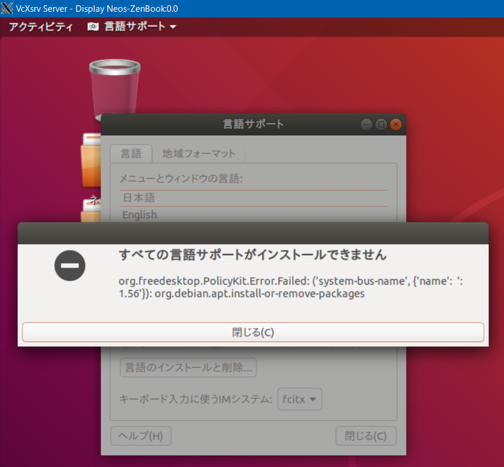

WSL2 Ubuntu 18.04 に GNOME + Fcitx-Mozc を導入して日本語デスクトップ環境を構築する最終解
ようやく Windows Sybsystem for Linux (WSL) の Ubuntu で、安定して日本語入力可能な GUI デスクトップ環境を構築することに成功したので、記録を残す。
Windows10 Home から Windows10 Pro にアップグレードした後の Insider Preview にて、WSL2 が動作したのでメモしておく。
ついでに GNOME GUI デスクトップ環境の構築に再トライしてみた。なんとか WSL2 Ubuntu 18.04 GNOME 上で Fcitx-Mozc が動作するようになったのでお知らせ。
目次
- こんな環境ができあがる
- 前提条件
- VcXsrv をインストールしておく
- WSL2 を使うまでの手順
- Ubuntu 18.04 の初期設定
- GNOME 環境を構築する
- 初回だけ :
fcitx-autostartの設定をしておく - 初回だけ : Fcitx-Mozc のシステムトレイアイコンを表示する
- 初回だけ : Fcitx-Mozc の日本語入力切り替えを設定する
- GNOME 起動をコマンド一発にする・VcXsrv でメタキー類を有効にする
- 設定変更時は
wslコマンドで Ubuntu を再起動すると良い - 以上
- 参考文献
こんな環境ができあがる
今回紹介する環境の仕様は以下のとおり。
- WSL2 上に構築する
- Microsoft Store からインストールできる「Ubuntu」(現時点では 18.04) をベースに構築する
- GNOME をインストールし、「Ubuntu 日本語 Remix」と同等の日本語 GUI デスクトップ環境を構築する
- Fcitx-Mozc をインストールし、Alt キー空打ちで日本語入力を切り替えられる環境を構築する
- GNOME セッションとは VcXsrv というツールを使用して接続するが、
Alt + TabやSuperキー (≒Winキー) が Ubuntu 内で認識するよう設定する
すなわち、WSL2 でほぼ完璧な GUI デスクトップ環境を構築し、自由に日本語入力できる環境とするワケだ。
留意点は以下のとおり。
- ウイルスバスター、Avast をインストールしているが、特に誤反応はしなかったので気にしなくて良さそう
- Ubuntu や VcXsrv は管理者権限で起動する必要はなかった
- PowerShell で WSL を操作する際は管理者権限で PowerShell を開いておくと安心かと (管理者権限でなくても特に問題ないかも)
- MacType を使用しているが、念のため Ubuntu や VcXsrv は除外するようにしておいた (特に問題ないかも)
まぁ、WSL 自体が Windows OS 標準の範囲内の機能なので、特にサードパーティツールによって邪魔されることはなかった、ということで。
前提条件
環境構築を始める前の、前提とする条件は以下のとおり。
- Windows10 Pro Insider Preview
- Insider Preview に登録し、WSL2 をインストールできるようにしておく
- Windows10 Home では WSL2 が正常に動作しなかったのだが、Windows10 Pro にアップグレードしたら正常に動作するようになった
- バージョン : 2004、OS ビルド : 19569.1000 環境で検証
- US キーボード環境で検証
- 日本語キーボードでは検証していないので、Fcitx による入力切替周りは調整が必要になるかも
- AutoHotKey スクリプト「Alt-IME-AHK」を使用している環境で検証
- Alt キーの空打ちで IME のオン・オフを切り替えられるツールを入れてある状態で、VcXsrv 経由で WSL2 Ubuntu を操作する前提で説明する
当方環境では、そもそも Windows10 Home の Insider Preview で WSL2 がうまく動かなかったので、Windows10 Pro をオススメする。
自分は US キーボードを使用している中で日本語入力環境を整備しているので、日本語キーボード利用者は少し設定が異なると思う。その点は未検証なので何かあれば情報ください。
VcXsrv をインストールしておく
それでは環境構築開始。まずは VcXsrv をインストールしておく。Chocolatey を使えば以下でインストール可能。
PS> choco install -y vcxsrv
そうでなければ以下からダウンロードしてインストールしておく。
WSL2 を使うまでの手順
WSL1 の状態で Ubuntu をインストール・初回起動まで済ませ、後で WSL2 にアップデートすることで正常に動作したので、その手順で説明する。
まずは Microsoft Store で Ubuntu をダウンロードし、以下のとおり初回起動の設定を済ませる。以降、初期ユーザは neo のテイで記載する。
Installing, this may take a few minutes...
Please create a default UNIX user account. The username does not need to match your Windows username.
For more information visit: https://aka.ms/wslusers
Enter new UNIX username: neo
Enter new UNIX password:
Retype new UNIX password:
passwd: password updated successfully
Installation successful!
To run a command as administrator (user "root"), use "sudo <command>".
See "man sudo_root" for details.
neo@Neos-Windows:~$ exit
続いて、管理者権限で起動した PowerShell を使う (Win + X → A での起動が楽)。
PS> wsl -l -v
NAME STATE VERSION
* Ubuntu Running 1
PS> wsl --set-version Ubuntu 2
Conversion in progress, this may take a few minutes...
For information on key differences with WSL 2 please visit https://aka.ms/wsl2
Conversion complete.
PS> wsl -l -v
NAME STATE VERSION
* Ubuntu Stopped 2
こんな感じで WSL2 に切り替えられた。
Ubuntu 18.04 の初期設定
もう何度か書いているが、少し改良したところもある。次のように打っていく。
# デフォルトのエディタを Vim に変更する
# sudo update-alternatives --config editor で設定しても良い
sudo update-alternatives --set editor /usr/bin/vim.basic
# sudo をパスワードなしで実行できるようにする
# 「neo ALL=(ALL) NOPASSWD:ALL」を追記する
sudo visudo
# 7箇所くらいある「archive.ubuntu.com」を「jp.archive.ubuntu.com」に編集する
# sudo vi /etc/apt/sources.list で編集しても良い
sudo cp /etc/apt/sources.list /etc/apt/sources.list.BAK
sudo sed -i 's/archive.ubuntu.com/jp.archive.ubuntu.com/g' /etc/apt/sources.list
# 日本語 Remix のリポジトリを追加する
wget -q https://www.ubuntulinux.jp/ubuntu-ja-archive-keyring.gpg -O- | sudo apt-key add -
wget -q https://www.ubuntulinux.jp/ubuntu-jp-ppa-keyring.gpg -O- | sudo apt-key add -
sudo wget https://www.ubuntulinux.jp/sources.list.d/bionic.list -O /etc/apt/sources.list.d/ubuntu-ja.list
# アップデートしていく
sudo apt update
sudo apt upgrade -y
sudo apt dist-upgrade -y
sudo apt autoremove -y
# 日本語環境にするため必要なパッケージを確認する : fonts-noto-cjk fonts-noto-cjk-extra ibus language-pack-ja あたりが出るだろうか
check-language-support -l ja
# 日本語化パッケージを入れる
sudo apt install -y $(check-language-support -l ja) language-pack-ja
# 日本語 Remix のパッケージを入れる
sudo apt install -y ubuntu-defaults-ja
# 日本語に切り替える
sudo update-locale LANG=ja_JP.UTF-8
# 一度 Ubuntu を再起動する
exit
# 再起動後、日本語 (ja_JP.UTF-8) になっているか確認する
locale
# アジア → 東京を選ぶ
sudo dpkg-reconfigure tzdata
# 日本語 man を入れる
sudo apt install -y manpages-ja manpages-ja-dev
GNOME 環境を構築する
ココからは GUI デスクトップ環境を構築するための手順。
# 日本語フォントを入れておく : MS 英文フォントは EURA の同意を求められる
sudo apt install -y fonts-noto fonts-ipafont fonts-ipaexfont fonts-vlgothic fonts-takao ttf-mscorefonts-installer
# GNOME を入れる
sudo apt install -y ubuntu-desktop gnome-tweak-tool
# Ibus を削除する
sudo apt purge -y ibus ibus-mozc
# Fcitx と Mozc をインストールする
sudo apt install -y fcitx fcitx-mozc fcitx-config-gtk fcitx-frontend-gtk2 fcitx-frontend-gtk3 fcitx-frontend-qt4 fcitx-frontend-qt5 fcitx-ui-classic kde-config-fcitx mozc-utils-gui dbus-x11
# 入力メソッドを更新する
im-config -n fcitx
# 起動時に使うスクリプトを作成する
sudo sh -c 'echo "fcitx-autostart &>/dev/null" > /etc/profile.d/fcitx'
# 環境変数を設定するスクリプトを作成する
sudo sh -c 'cat <<EOL > /etc/profile.d/fcitx.sh
#!/bin/bash
export QT_IM_MODULE=fcitx
export GTK_IM_MODULE=fcitx
export XMODIFIERS=@im=fcitx
export DefaultIMModule=fcitx
EOL'
# 権限設定をしておく
sudo chmod -R 777 ~/.cache/
# PolicyKit 関連のエラーを回避するため、全てのユーザに全ての許可を与える設定ファイルを作成する
sudo sh -c 'cat <<EOL > /etc/polkit-1/localauthority/50-local.d/99-all.pkla
[Allow all]
Identity=unix-user:*
Action=*
ResultAny=yes
ResultInactive=yes
ResultActive=yes
EOL'
# gnome-software (Ubuntu ソフトウェア) でカテゴリ表示がされないことがある。以下のようにグループに追加しておくと良い
sudo gpasswd -a neo root
sudo gpasswd -a neo admin
sudo gpasswd -a neo lpadmin
PolicyKit-1 (polkit-1) に関する情報が少なくて苦労したのだが、自分で編み出した設定ファイルを最後に作ってある。コレを入れておくと、「Ubuntu ソフトウェア」などのアプリで以下のような権限エラーが出るのを防げて、GUI 環境で自由にアップデートなどができるようになる。
org.freedesktop.PolicyKit.Error.Failed: ('system-bus-name', {'name': ':1.56'}): org.debian.apt.install-or-remove-packages

ココまでで事前準備は OK。
GUI 起動の度に実施する起動コマンド
以降の手順は、Ubuntu 起動後、GUI を起動する度に実施する。
# UUID を更新する
sudo sh -c 'dbus-uuidgen > /var/lib/dbus/machine-id'
# DBus を再起動する
sudo service dbus restart
# DISPLAY 環境変数は以下で指定する
export DISPLAY="$(cat /etc/resolv.conf|grep nameserver|awk '{print $2}'):0"
# ココまで設定したら、VcXsrv を起動する。
# DISPLAY : -1、「Dissable access control」にチェックを入れて、黒いウィンドウを出しておく
# VcXsrv を起動してある状態で、以下を実行する
XDG_CURRENT_DESKTOP=ubuntu:GNOME XDG_SESSION_TYPE=x11 gnome-session
これらのコマンドの説明は以下のとおり。
dbus-uuidgenとservice dbus restartは Ubuntu 起動のたびにやってやらないと安定しないようだったexport DISPLAYのイディオムが特徴的だろうか。export DISPLAY=:0などだとうまくいかなかったのだが、このイディオムだと何度やっても綺麗に繋がるのでオススメ- VcXsrv は DISPLAY を
-1にしておくのと、「Disable access control」にチェックを入れておくのが大事 XDG_CURRENT_DESKTOP=ubuntu:GNOMEという環境変数を指定しておくと、Ubuntu Dock などが有効になる- 「Ubuntu 日本語 Remix」などをピュアにインストールした時のデフォルトセッションは、「Ubuntu Session」という、「GNOME Session」の拡張版である。コレに近い動きをさせるためにこの環境変数を入れてある
- この環境変数がないと、「設定 (
gnome-control-center)」に「Dock」のメニューが表示されなかったりする
コレで GNOME が起動するはずだ。
初回だけ : fcitx-autostart の設定をしておく
以上の作業で GNOME セッション (厳密には Ubuntu セッションに近いモノ) が起動するが、初回は fcitx-autostart が正常に起動してくれていないので、そのための設定を1回だけ行っておく。
端末 (ターミナル) を開いて $ fcitx-autostart を実行すれば、とりあえずは Fcitx-Mozc が有効になる。
しかし毎回 fcitx-autostart を叩くのは面倒なので、「自動起動するアプリケーションの設定」を開き、fcitx-autostart を指定することで対応する。コレで2回目以降の起動時は Fcitx-Mozc がデフォルトで有効になっているはずだ。
なお、コマンドラインで「自動起動するアプリケーションの設定」を追加するなら、以下のように設定ファイルを作ってやれば、同等の結果となる。
# 「自動起動するアプリケーション」として fcitx-autostart を登録する
cat <<EOL > ~/.config/autostart/fcitx-autostart.desktop
[Desktop Entry]
Type=Application
Exec=fcitx-autostart
Hidden=false
NoDisplay=false
X-GNOME-Autostart-enabled=true
Name[ja_JP]=fcitx-autostart
Name=fcitx-autostart
Comment[ja_JP]=fcitx-autostart
Comment=fcitx-autostart
EOL
初回だけ : Fcitx-Mozc のシステムトレイアイコンを表示する
デフォルトだと、画面右上に Fcitx-Mozc のアプリインジケータ (システムトレイアイコン) が表示されていないため、以下の設定をしておく。
- GNOME Tweaks (
gnome-tweaks) を開き、GNOME Shell 拡張機能から「Ubuntu appindicators」を有効にする- 同画面で「Ubuntu Dock」を有効にすれば、画面上に Dock が常に表示されるようになる
「設定 → 地域と言語 → 入力ソース」は英語のみにしておけば、「en」「ja」といった余計な表示が出ないで済む。
初回だけ : Fcitx-Mozc の日本語入力切り替えを設定する
「Fcitx 設定」(fcitx-configtool) を開き、日本語入力切り替えを設定しておく。
本当は左右の Alt キー空打ちで IME のオン・オフを切り替えたく、Fcitx 自体はそれがすんなり設定できるのだが、Windows ホスト側で Alt-IME-AHK を有効にしていると、「IME をオンに / オフに」の設定がうまくできない。Lalt や Ralt ではなく、Alt + kanaswitch キーの押下とみなされてしまうのだ。
コレで設定しても Alt キーの空打ちによるオン・オフはできるのだが、「左 Alt で必ず IME オフ」「右 ALt で必ず IME オン」みたいな制御はできず、「どちらかの Alt を空打ちするとオン・オフをトグルする」といった動作になってしまう。
コレを解消するには、Alt-IME-AHK のスクリプトを編集して「VcXsrv ウィンドウがアクティブな場合は機能を無効にする」といった実装をしたいところだが、うまく制御できず断念した。
仕方がないので、VcXsrv 使用時は AutoHotKey のタスクトレイアイコンから「Suspend Hotkeys」を選択して一時的に AutoHotKey を無効化して運用するか、Ctrl + Space を使うことにするか、Alt キーのトグル操作で諦めるか、という感じ。
GNOME 起動をコマンド一発にする・VcXsrv でメタキー類を有効にする
ココまでで初期設定は全て完了。以降は GUI 環境の起動を楽にする方法。
予め VcXsrv を起動しておいたり、複数のコマンドを打ったりするのが面倒臭いので、以下のように Bash ファイルにまとめてしまおう。
~/bin/startu
#!/bin/bash
# Prepare
sudo sh -c 'dbus-uuidgen > /var/lib/dbus/machine-id'
sudo service dbus restart
export DISPLAY="$(cat /etc/resolv.conf|grep nameserver|awk '{print $2}'):0"
# Launch VcXsrv
/mnt/c/Program\ Files/VcXsrv/vcxsrv.exe :0 -ac -keyhook &
# Start GNOME Session
XDG_CURRENT_DESKTOP=ubuntu:GNOME XDG_SESSION_TYPE=x11 gnome-session
# After End GNOME, Kill VcXsrv
/mnt/c/Windows/System32/taskkill.exe /IM vcxsrv.exe /T /F
ファイル作成後、$ sudo chmod 777 ~/bin/startu で実行権を付与しておく。
VcXsrv 起動時に指定しているオプションが重要。
-acはDisable access control restrictionsオプション。スタートメニューから起動し GUI で設定した時に指定するオプションと同じ-keyhookオプションがミソ。コレは GUI で起動した時に画面上には現れないオプションで、コレを指定することでAlt + TabやWinキーのイベントを、Windows ホスト側ではなく VcXsrv 側が認識するようになる- 逆にいうと、VcXsrv のウィンドウがアクティブな状態で
Alt + Tabを押しても、Windows ホスト側の他のウィンドウに切り替えられなくなるので、もしコレが嫌なら-keyhookオプションを外しておけば良い
- 逆にいうと、VcXsrv のウィンドウがアクティブな状態で
このファイルによって、「Ubuntu 起動」→「$ startu」と実行するだけで、VcXsrv と GNOME を同時起動できるようになった。
設定変更時は wsl コマンドで Ubuntu を再起動すると良い
im-config とかをイジった後は、管理者権限で開いた PowerShell にて、次のように WSL を停止し、再度 Ubuntu を開くようにすると確実になる。
PS> wsl --shutdown
# もしくは以下 (--terminate)
PS> wsl -t Ubuntu
以上
- WSL2 にアップデートできなかったのは恐らく Windows10 Home の Insider Preview だったからだろうか。Windows10 Pro にしたらすんなりできた
- WSL2 Ubuntu 18.04 で GNOME デスクトップを立ち上げるのは一手間必要だった
- 毎度行う
dbu-uuidgenやDISPLAY環境変数の設定などが分かりづらかった
- 毎度行う
- GNOME セッション内の特権不足のために PolicyKit (polkit) を作成する必要があった
- コレに関してはネット上に全然文献がなかったけど、みんなそんなに WSL Ubuntu で GNOME デスクトップ立ち上げてないのだろうか？
- Fcitx-Mozc を使うための設定もなかなか骨が折れる
- US キーボード (AutoHotKey) ユーザ特有かもしれないが Alt-IME-AHK との競合が解消しきれない部分もあるが、まぁ妥協か…
こんなところか。かなり長期に渡って苦戦したが、一旦はコレで環境構築できたということで。
参考文献
- WSL2
- 日本語化
- WSLでIntelliJを動かして、Windowsでも最高の開発環境を手に入れる | あそびば32 …
mate-sessionを使っている
- WSLでIntelliJを動かして、Windowsでも最高の開発環境を手に入れる | あそびば32 …
DISPLAY環境変数- VcXsrv
- Fcitx
fcitx-autostart- Android でもとりあえず Ubuntu のデスクトップ環境を使いたい（Termux 版 - デスクトップ環境で日本語入力） - Qiita
- Ubuntu 18.04 な WSL 上に日本語入力環境を構築する - Qiita
- Ubuntu18.04+WSLでfcitx-mozcを使って日本語入力出来るようにする - もやし日誌
- WSL の Ubuntu18.04 で日本語入力: パソコン鳥のブログ
- Policykit - なんなんなん行く？
- 【第11回】目指せLinuxマスター(3) polkitの設定 - エンリュの迷い森
- PolicyKitを用いて適切に権限管理するには - ククログ(2016-12-27)
- fcitxで作るWSL日本語開発環境 - Qiita
- PolicyKit
- その他